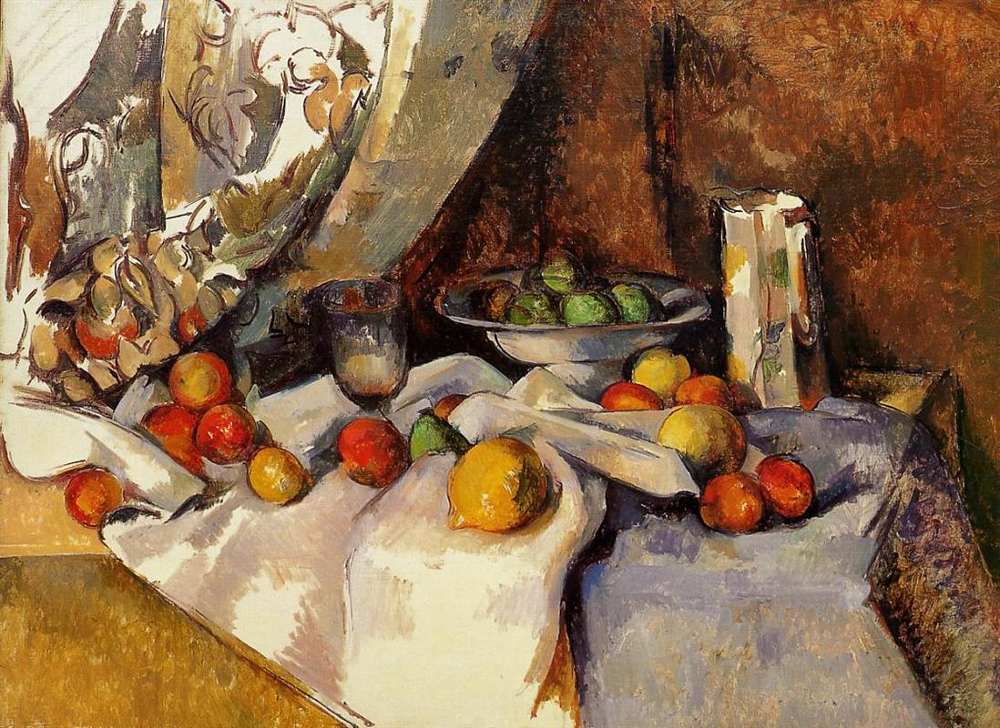

My, pragnący tak wielkich tajemnic
Łakniemy piękna. Pragniemy ideałów. Tęsknimy do wzniosłych uniesień. Czy odnajdziemy je w sztuce? W jednym niezrównanym obrazie, w pojedynczej linijce wiersza, w osamotnionym akordzie muzyki kryje się może więcej prawdy o naszym losie niż w miriadach zapewnień i dostojnych wyznań.
O ileż łatwiej możemy dziś obcować ze sztuką, mając pod ręką niezmierzoną galerię największego — bo cyfrowego — muzeum świata. Jakże inaczej wyglądało poszukiwanie estetycznych doznań przed ledwie stu laty!
By zobaczyć prapremierę opery „Ariadna na Naksos” Richarda Straussa z librettem Hugona von Hofmannsthala, księżna Marie von Thurn und Taxis specjalnie na tę okazję przemierza w roku 1912 pół Europy w drodze do Stuttgartu.
By podziwiać rzeźbę głowy faraona Amenhotepa, której poświęci jeden ze swych wierszy, Rilke wielokrotnie w trakcie swych wizyt w Berlinie odwiedza tamtejsze Muzeum Egipskie.
Podróżując wraz z księżną Taxis po Włoszech, poeta zatrzymuje się w Udine, by w pałacu arcybiskupim zobaczyć wspaniałe, „anielskie” freski Tiepola.
Rilke i księżna wyruszają również do Castelfranco, by z rewerencją pozdrowić Madonnę Giorgione, nie zapominając przy tym również o „pięknym młodym synu kondotiera u jej stóp”.
Chcąc wyrecytować swój przekład „Judyty”, księżna, znając upodobanie Rilkego do pełnego harmonii otoczenia, każe zatrzymać powóz przed fasadą S. Zeno w Weronie i prowadzi zdumionego poetę ku chórowi za głównym ołtarzem, gdzie ponad głowami widnieje „Poliptyk San Zeno” pędzla Mantegni.

Dla Rilkego i swych gości księżna Taxis zaprasza do Duino „Quartetto Triestino”, którego członkowie bawią na zamku przez cały dzień i raczą towarzystwo wyborną muzyką. „Jak cudownie rozbrzmiewały na ogromnym tarasie utwory Beethovena i Mozarta, jakże ich dźwięki płynęły ponad rozległą taflą morza!” — wspomina księżna. Tam właśnie recytuje poeta swoje elegie oraz, „gdy zmierzch z wolna barwił wodę coraz ciemniejszym odcieniem”, niezwykły wiersz, którego słowa „pozwalają odczuć szum nawałnicy, tchnienie nocy i oddech nieskończoności”, owo „Pradawne tchnienie morza…”.
By móc sycić wzrok mistyką płótna Picassa „La famille des Saltimbanques” — obrazu, który „w jednej chwili objawił mu naturę artysty” — Rilke odwiedza Herthę Koenig w jej monachijskim mieszkaniu nad brzegiem Izary, gdzie później nawet przez pewien czas zamieszkuje.
Pragnąć kosztować niezrównane malarstwo El Greca, Rilke wyrusza w podróż do Hiszpanii, do Toledo, z którym artysta złączył się niczym „olbrzymi klejnot wtopiony w ten straszliwy i wspaniały relikwiarz”.
To podczas paryskiego Salon d’Automne z roku 1907, który odwiedza niemal codziennie, Rilke odkrywa dla siebie twórczość Cézanne’a, podziwiając wystawione tam płótna malarza. Urzeczony Salonem, pisze kilka długich listów do żony Klary Westhoff, które tworzą swoistą monografię poświęconą Cézanne’owi, porównywalną z jego książką o Rodinie.
Świat współczesny mamy tuż obok, pod ręką, w spojrzeniu. A jednak nie sposób nas uszczęśliwić. Pragniemy zbyt wiele. Podziwiamy zbyt intensywnie. Pożądamy zbyt mocno.
Nie kochamy bowiem jak kwiaty, kwiaty — jak mówi poeta — jedynie z jednego roku. Kiedy kochamy, wzbiera w nas sok z niepamiętnych czasów…
Fragmenty „Wspomnienia o Rainerze Marii Rilkem” pióra Marie von Thurn und Taxis w przekładzie autora.